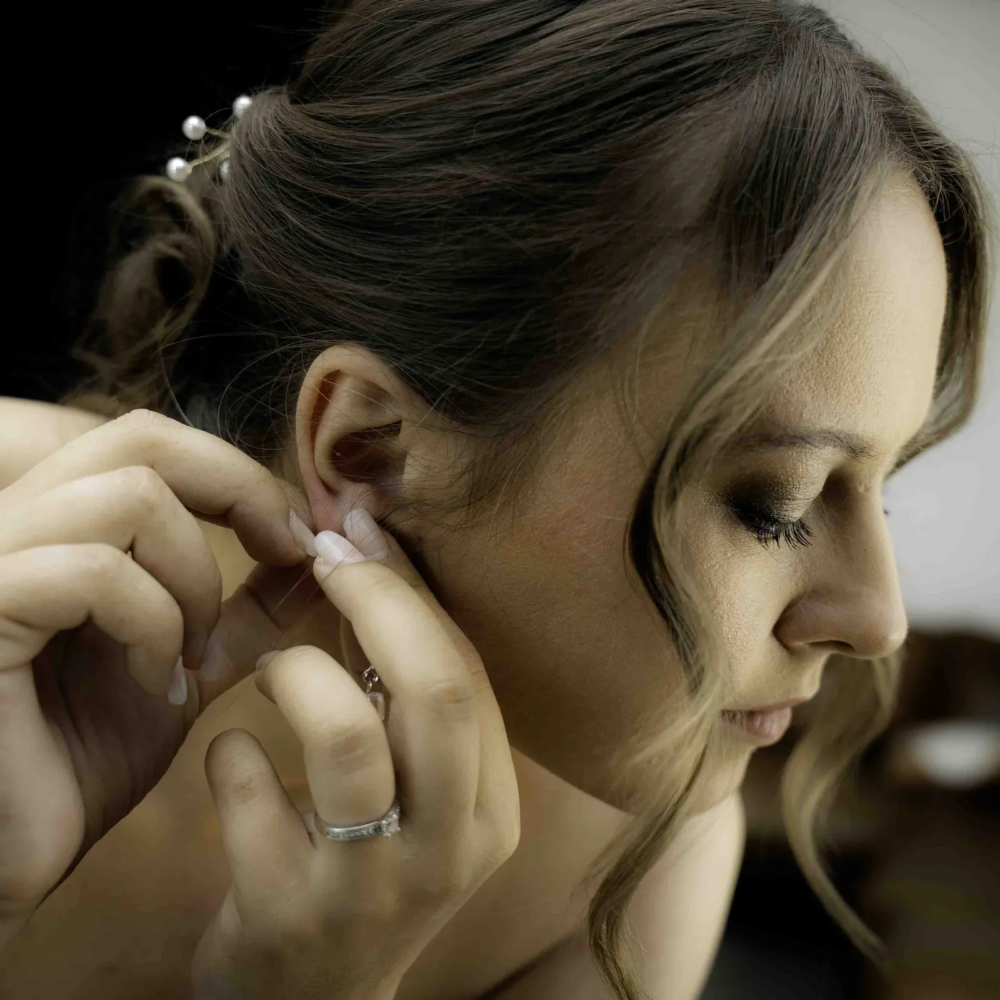
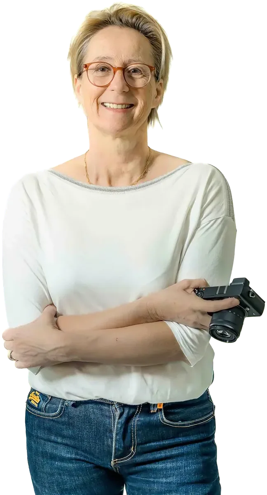
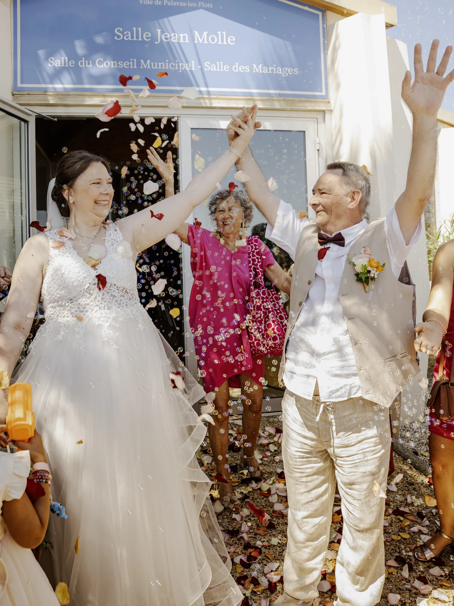
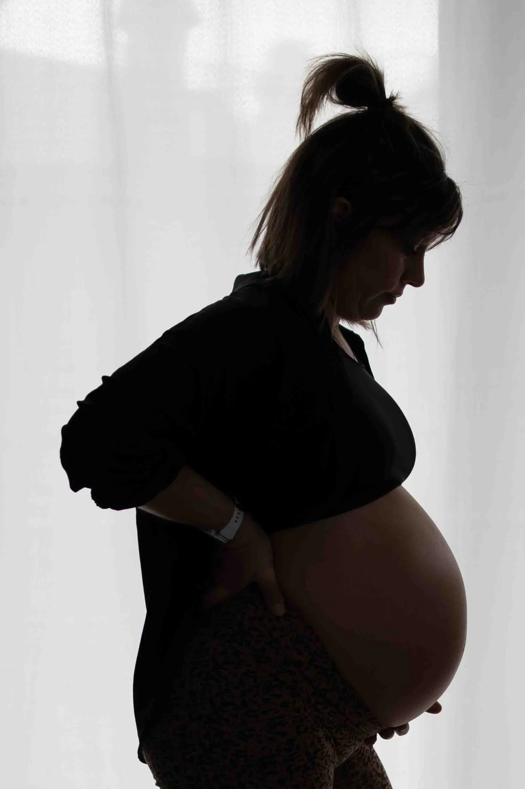
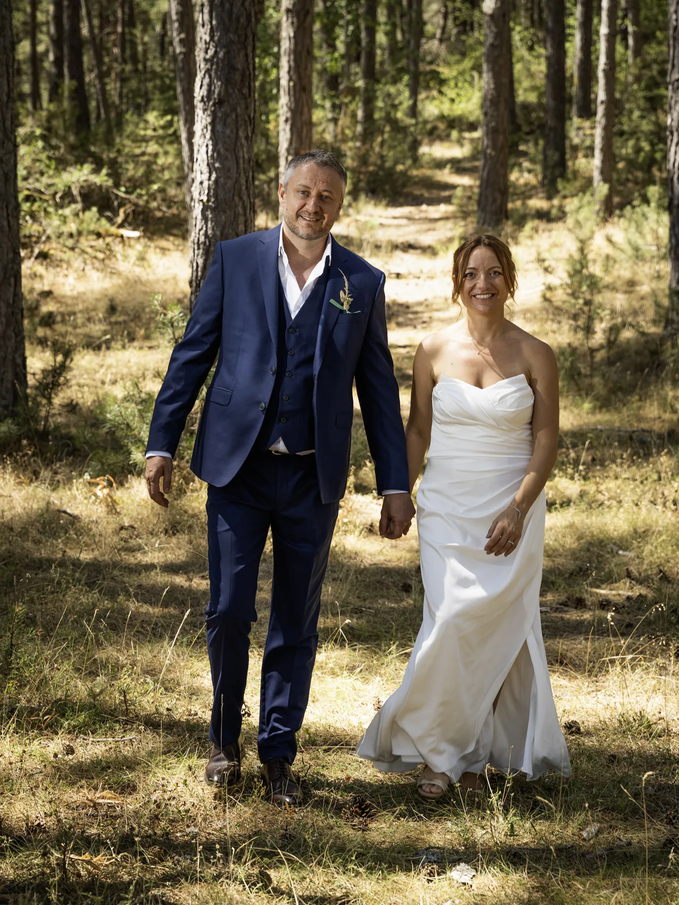
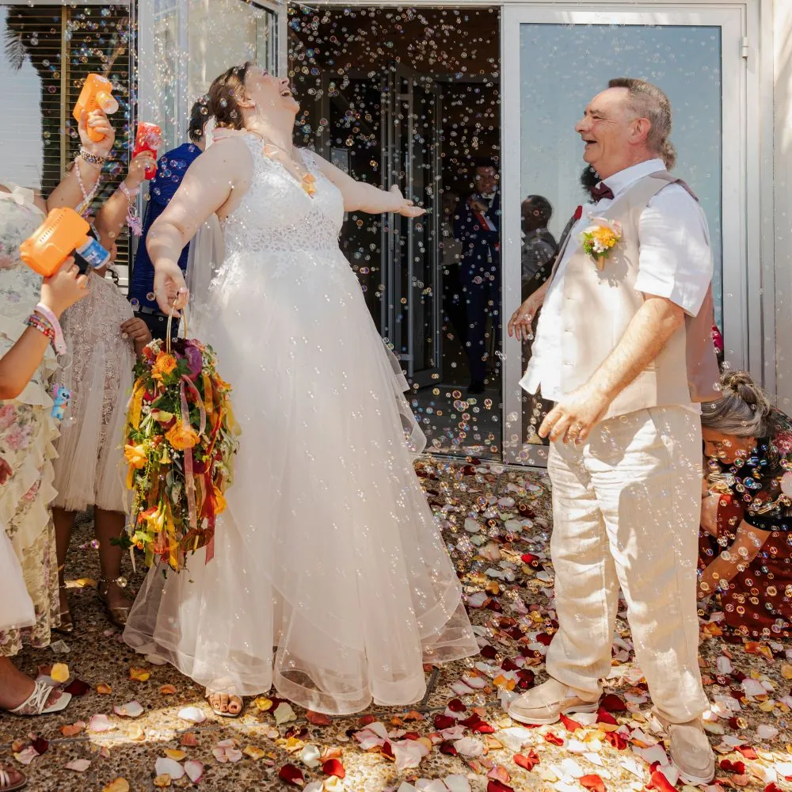
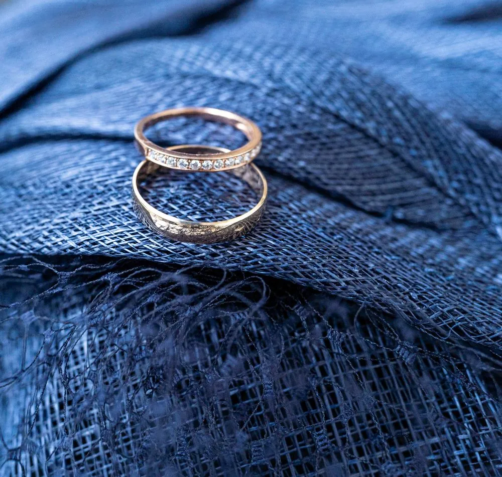
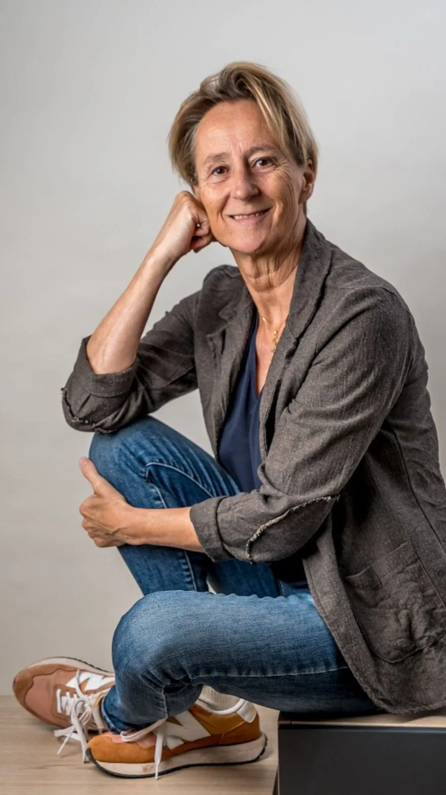
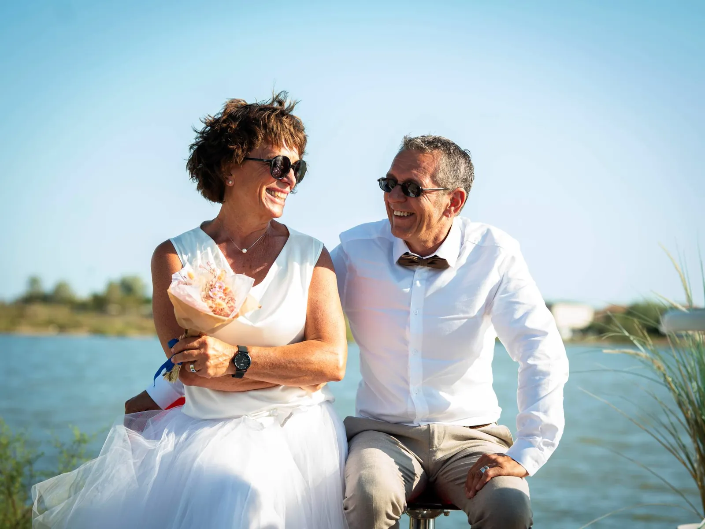

I. Les préparatifs
Je ne fige rien. Je documente le mouvement, les détails, le chaos organisé.

Anne Saunier · Photographe à Montpellier
Mariages, portraits et images d'entreprise. Je ne vous demande pas de poser — enfin, quelquefois si. Je capture le vrai : les rires volés, les regards complices, tout ce qui se passe quand on oublie l'objectif.
Déplacez la lumière · cliquez pour changer de fondTouchez pour changer de fond
L'atelier
Comme une séance de massage, une séance photo commence souvent avec un peu d'appréhension. Mon rôle : vous guider, avec bienveillance, jusqu'à ce que vous l'oubliiez.
De l'argentique de mes débuts au studio de Grabels, je cherche la même chose : l'authenticité et l'émotion.
Portraits, reportages de mariage, films, séances naissance… tout reste guidé par la lumière, l'émotion et la simplicité. Vous repartez avec des images que vous aimez — et souvent, avec un bon souvenir de la séance elle-même.
Mon histoireCe que je photographie

01 — MariageUn reportage naturel, des préparatifs à la soirée, pour revivre aussi ce que vous n'avez pas vu.
Dès 1 049 €Découvrir
02 — PortraitsSolo, en duo, en famille, en attendant bébé ou avec votre passion : en studio ou en lumière naturelle.
Dès 99 €Découvrir 03 — EntreprisesPortraits d'équipe homogènes, reportages et films, en studio ou dans vos locaux.
Dès 249 € HTDécouvrirUn mariage, raconté

Je ne fige rien. Je documente le mouvement, les détails, le chaos organisé.

Je ne photographie pas deux personnes. Je raconte le lien qui les unit.

Je ne photographie pas un « oui ». Je raconte tout ce qui l'entoure.

Je ne photographie pas seulement ce qui se voit. Je capture aussi ce qui se ressent.

La papeterie, les fleurs, les alliances : tout ce que vous avez préparé pendant des mois.
En mouvement
Une voix, un geste, une ambiance. Je filme aussi les mariages, les naissances et les entreprises, de la captation au montage.
Regarder « Laure & Charles », Château Bas d'Aumelas
Qui suis-je
Tout a commencé avec un appareil argentique et un agrandisseur installé dans la salle de bains familiale. Des heures dans le noir, à attendre que l'image apparaisse.
Puis la photographie immobilière m'a ramenée au cadrage et à la lumière. Le portrait est revenu, puis les entreprises. Le confinement, avec ma famille pour modèles, m'a appris le flash. Aujourd'hui, le studio est au cœur de ma pratique — et la vidéo, son prolongement naturel.
Le studio, à Grabels
Un studio chauffé et aménagé, pensé pour que chacun s'y sente en confiance — des nouveau-nés aux équipes d'entreprise.
Ils m'ont fait confiance
Un immense merci à Anne pour son talent et son regard unique. Elle a su capturer chaque instant de notre mariage avec une sensibilité et une élégance incroyable. Chaque photo raconte une histoire, reflète l’émotion du moment et nous permet de revivre cette journée magique encore et encore. Grâce à elle, nous avons de magnifiques souvenirs à partager avec nos proches. Si vous cherchez une photographe passionnée et douée, n’hésitez pas une seconde !Karine H.2025
Même si vous détestez être pris en photo... foncez ! S'il y a bien une chose que je redoutais dans notre mariage, c'était les photos. Au final... je me suis complètement trompé. Elle a été d'une efficacité impressionnante. Tout était fluide, naturel et parfaitement organisé. Les quelques photos "posées" ont été réalisées rapidement, sans stress, et le reste du temps, elle a capturé notre journée sans jamais être envahissante. À plusieurs reprises, je me suis même demandé où elle était... jusqu'à découvrir les photos ! Elle avait réussi à immortaliser tous les moments importants sans que je la voie travailler.Jean-Charles A.2024
L atelier photo de Grabels, c est bien plus qu un simple atelier photo! C est aussi un moment convivial, chaleureux, parfois très drôle, où l on se sent en confiance. Ma séance a permis de faire des photos professionnelles et quelques photos personnelles. Le résultat a fait l unanimité autant dans la famille, sur les réseaux, qu’au travail. Un immense merci à la photographe pour les photos et le moment partagé !Caroline L.2025
J'avais besoin de photos "au naturel", ce qui implique paradoxalement un oeil professionnel. Anne non seulement a su me mettre à l'aise (poser n'est vraiment pas ma tasse de thé!), mais elle a été jusqu'à trouver des accessoires variés (vestes, écharpes, casquette !) qui donnent effectivement une allure différente à chaque photo. Absolument satisfait du résultat, qui est au-delà de mes espérances ! Je recommande l'Atelier Photo Montpellier sans réserve !François M.2025
Lorsque j’ai fait cette séance photo mère fils avec Anne, tout a été fait pour nous mettre à l’aise. Elle savait nous guider pour prendre des poses qui n’en étaient justement pas trop (naturelles quoi ). Elle nous a même sorti des vêtements de son dressing pour permettre à tom de tenter plusieurs styles. Bref nous avons passé un très bon moment et le résultat est superbe : on se reconnaît (mais un peu sublimes quand même) ; A refaire avec ma fille sans doute.Karen L.2025
Nous avons fait appel à Anne pour notre mariage ainsi que pour le baptême de notre fils. Elle a été très à l’écoute de nos attentes et a fait preuve d’un professionnalisme remarquable tout au long de ces événements. Elle a même pris l’initiative de proposer des jeux à nos invités, ce qui a contribué à créer une ambiance conviviale et chaleureuse. Nous la recommandons vivement.Romain L.2026
Le journal
Mariage ·
Les vrais critères pour choisir un photographe mariage à Montpellier sans stress ni mauvaises surprises.
 Mariage ·
Mariage ·
Découvrez pourquoi les préparatifs de mariage sont une étape cruciale pour capturer des moments authentiques et mémorables dans votre reportage photo de mariage.
 Vidéo ·
Vidéo ·
Comment la vidéo Marque Employeur filtre les candidatures, améliore l’alignement culturel et réduit le turnover. Témoignages employés, film manifeste, e-learning : formats et ROI.

Votre histoire
Une date de mariage, une séance pour vous, un projet d'entreprise : chaque projet commence par une rencontre, sans engagement.